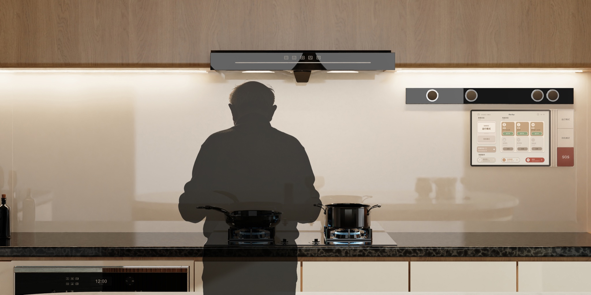
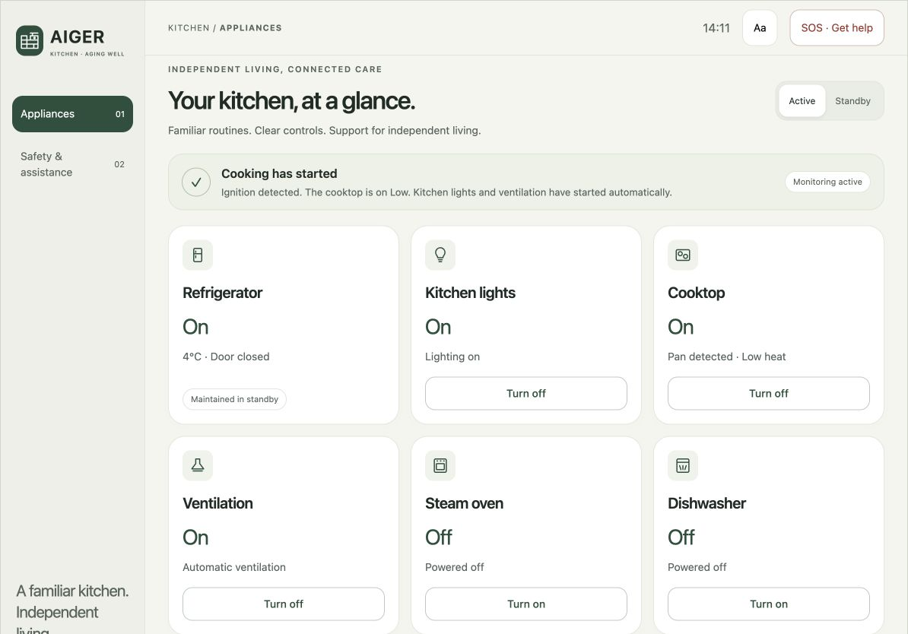
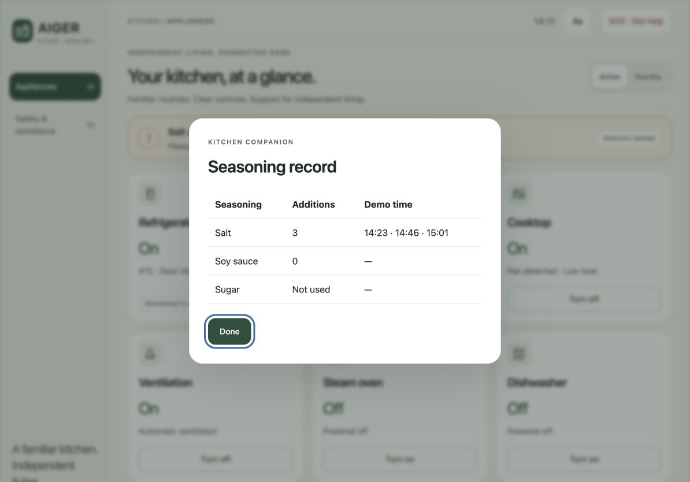
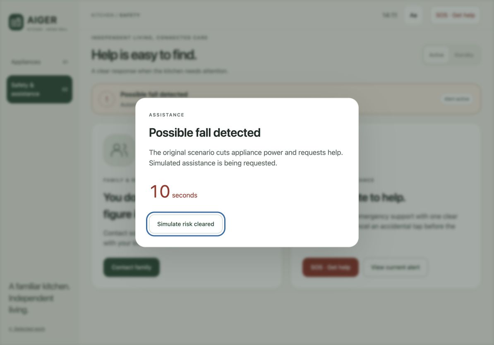
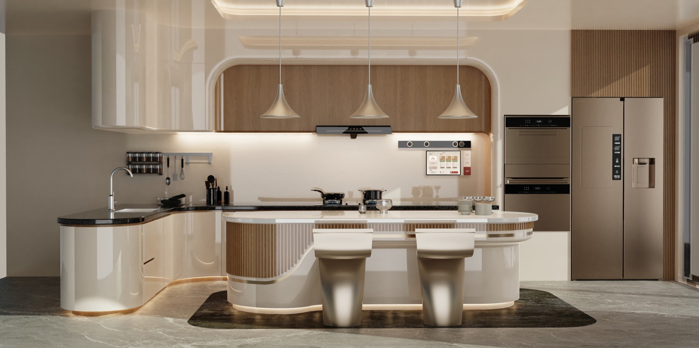
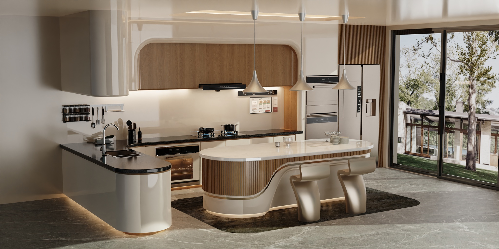

REPORTED ROUTINE
Turn on stove → remember hood → turn on hood
A second appliance depends on a separate remembered action.
AIGER KITCHEN / UX & PRODUCT DESIGN / 2025–2026
Cooking should not depend on remembering every switch. I designed a connected-kitchen concept that links ventilation to ignition, while keeping appliance status and manual controls visible.
Try the cooking flow ↓See why I designed it ↓
01 / THE PROBLEM
Survey respondents remembered the extractor hood only after switching on the stove.
Question 6 · 59.09% · Multiple selections allowed
20 interviews focused on middle-income adults aged 55–65. The 22-response questionnaire included a broader age range. This finding is self-reported survey evidence, not a measured failure rate.
02 / FROM EVIDENCE TO DESIGN
REPORTED ROUTINE
Turn on stove → remember hood → turn on hood
A second appliance depends on a separate remembered action.
PROPOSED INTERACTION
Ignite stove → hood activates → review shared status
The concept removes the separate hood-on step from this sequence. Individual controls remain available.
Placing a pan prepares the sequence. Ignition starts ventilation and lighting.
A shared appliance overview makes the cooktop and hood states visible together.
Automatic coordination does not remove the hood's manual control.
Design rationale: a reminder would still leave a second action to complete. Linking the response addresses that step directly; whether users prefer this behavior still needs evaluation.
03 / TRY THE CORE FLOW
The complete logic is visible above. Use these buttons to explore the working simulation, then try the appliance controls yourself.
Before cooking: the cooktop and hood are off. Select step 2 to simulate ignition and see both states change.
Open prototype full size ↗Browser simulation. No real sensors, connected appliances or calls. On a small screen, open the full-size prototype for readable controls.
04 / INTERFACE ITERATION
The current browser iteration brings device state and action together. These are interface changes, not measured usability gains.

The reported routine required remembering the hood separately. The proposed flow links it to ignition and displays both devices together.
The current interface groups everyday device controls under Appliances and urgent situations under Safety & assistance.
The prototype now demonstrates ignition activating ventilation, visible device states and manual override. The original project included simulated control-interface sessions with 10 participants. This browser iteration has not been retested; reduced forgetting, faster task completion and safety improvements have not been measured.
Other survey findings: 18/22 worried about forgetting to switch off the stove or appliances; 11/22 returned to check equipment after leaving the kitchen. These informed the wider status and assistance concepts.
A follow-up evaluation should ask users to start cooking, explain which devices responded and why, and override the hood. Task completion, missed feedback and unintended actions would help assess whether the design is clearer.
Sample: 19 questionnaire respondents were 55–65, one was 71–75, and two were over 75. Multiple selections were allowed. Survey counts describe reported routines and concerns, not prototype outcomes.




Try seasoning record ↗ · Try assistance scenario ↗
Spatial walkthrough created by a collaborator. Installation and appliance behavior are concept demonstrations.